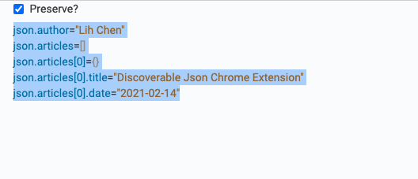
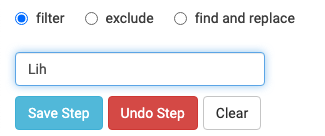

Discoverable JSON (DJ) Chrome Extension
Why?
Discoverable JSON Chrome Extension was inspired by Gron. It essentially flattens a JSON document, however nested, into a series of absolute paths with their corresponding assigned values.
Don't get me wrong. JSON is great. Great for computer languages to parse; however, it's hard for humans to figure out where the data is relative to the rest of the JSON document. With a flattened JSON document, we can now easily search, filter, and find/replace.
This is also a great way to explore a JSON document returned by a sparsely documented API. Check it out here: https://chrome.google.com/webstore/detail/discoverable-json/pcakbljjigdafljigcpbmjllkbhlncjg
A Simple Example
For instance, if you have the following JSON document,
{
"author": "Lih Chen",
"articles": [
{
"title": "Discoverable Json Chrome Extension",
"date": "2021-02-14"
}
]
}
Discoverable JSON will turn it into a series of assignment below.
json.author="Lih Chen"
json.articles=[]
json.articles[0]={}
json.articles[0].title="Discoverable Json Chrome Extension"
json.articles[0].date="2021-02-14"
Once you have installed the extension, it will provide you with the flattened JSON on the right pane. If you uncheck the Preserved? checkbox, it will update in real-time as you manipulate our JSON (more about that in the next section). Otherwise, it will highlight the matching text.

JSON Manipulations
The extension provides you with the following 3 operations.
- Filter - You can narrow down your search by start typing in the text box. Be sure that the
filterradio button has been selected. It accepts regular expressions as well. - Exclude - Basically, it's the opposite of
filter. It removes the matching text. - Find and Replace - Once you select the
find and replaceradio button, an additional text box will show up.

Save steps
You can save your intermediate steps and chain them together to produce the final output.
Back to JSON
The resulting JSON document will be reconstructed on the left from your modified javascript expressions.
More Advanced Example
Let's try something a bit more interesting. Let's push both the nested "title" and "date" attributes one level up and remove the articles attribute altogether.
 First we need to replace
First we need to replace articles\[0\] with title. As shown in the screenshot, the extension helpfully highlights and crosses out the string that's about to be replaced. It also highlights the new replacement string. Do the same thing for date.
 Save the steps. As you can see on the left panel, both
Save the steps. As you can see on the left panel, both title and date are now one level up.
 Lastly, we just need to do a little clean-up by excluding (removing) all javascript expressions on the right with the string
Lastly, we just need to do a little clean-up by excluding (removing) all javascript expressions on the right with the string articles.
Parting thoughts
I pretty much ported Gron into a browser extension along with a few functions that make it powerful. Gron is a great tool; however, unless you are comfortable inside a terminal, its power remains unavailable to you. I'd like to unlock its power to a greater audience. Feel free to give me any feedback. Report any bugs on the project's github page